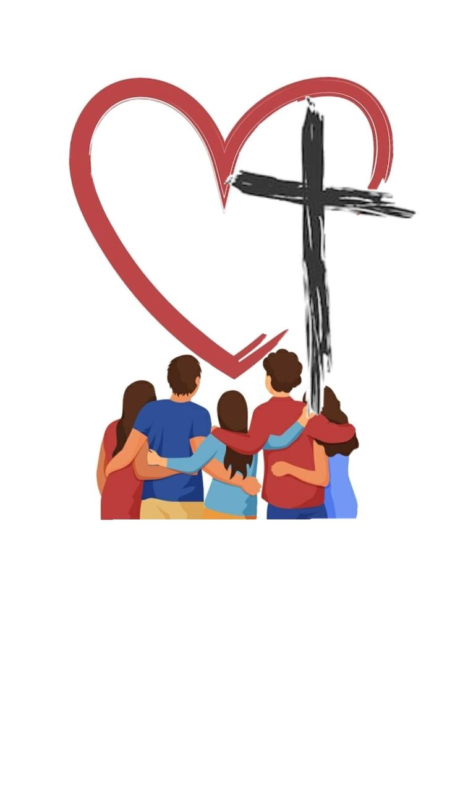

¿Qué es la Pastoral Juvenil?

Es la acción organizada para acompañar a adolescentes y jóvenes a partir de los 14 años a tener un encuentro personal con Jesús, fomentando su crecimiento integral, fe y compromiso apostólico.

Es la acción organizada para acompañar a adolescentes y jóvenes a partir de los 14 años a tener un encuentro personal con Jesús, fomentando su crecimiento integral, fe y compromiso apostólico.